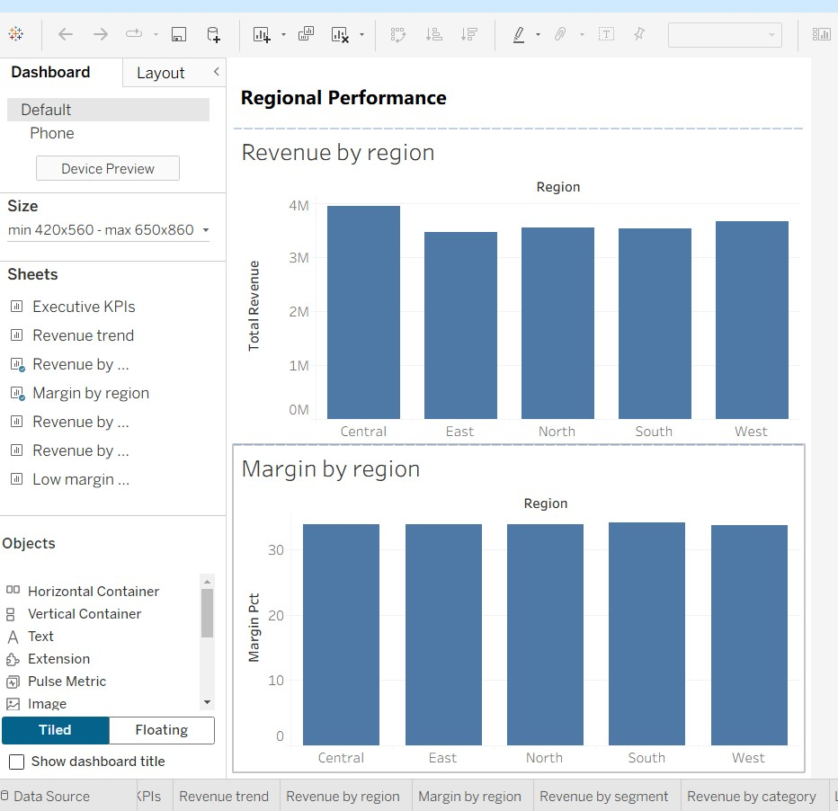
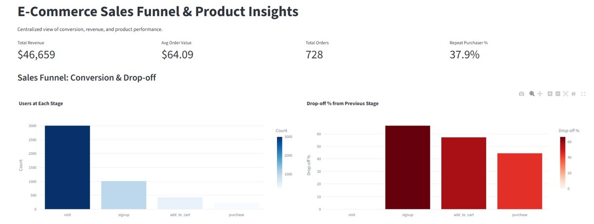

Cisco Data Analytics Essentials
Issued: Feb 2026
Focus Areas:
- Data analysis fundamentals
- SQL basics
- Data visualization concepts
Data Analyst
Transforming raw data into meaningful insights that support business decisions.
Download ResumeI turn data into clear stories and decisions.
Entry-Level Data Analyst with hands-on experience in SQL, Python, Tableau, and Excel. Skilled in data cleaning, exploratory data analysis (EDA), KPI reporting, and dashboard development to support business decision-making.
I have experience working in Agile teams and building end-to-end analytics projects involving revenue analysis, customer segmentation, and performance tracking. At Labfox Studio I supported KPI reporting and automated reports; during my capstone with client TraCCC I served as Product Owner on a 5-member team, cleaning large-scale datasets and delivering policy-oriented insights.
Strong analytical foundation with a Master's in Data Analytics from George Mason University. Seeking an entry-level Data Analyst role where I can contribute to data-driven decision-making and business performance optimization.
Supporting teams with KPI reporting, dashboards, and data-driven insights.
Hyderabad, India · May 2022 – Dec 2023
Objective: Support the analytics team by cleaning data, building structured reports, and improving reporting accuracy for sales and operations.
Key contributions:
Outcome:
Reporting became more consistent and efficient; business teams could track performance metrics more clearly with reduced manual effort.
Click to flip back
Capstone · TraCCC
Click for details
Client: TraCCC · George Mason University · Fairfax, VA · Aug 2025 – Dec 2025
Objective: Analyze large-scale datasets (2018–2024) to identify trends and patterns in incidents, casualties, and geographic distribution.
Key contributions:
Outcome:
Structured comparative analysis and visual reporting for stakeholders and policy-oriented recommendations.
Click to flip back
Explore how I've applied data analytics to drive insights and support decisions.

RetailClick for details
Tools: SQL, Python, Tableau
Overview: Analyzed retail sales data for revenue performance, product profitability, and regional trends.
Outcome: Executive-level dashboard for sales performance and growth areas.
Click to flip back

E-CommerceClick for details
Tools: SQL, Python, Power BI
Overview: Customer Behavior & Revenue Optimization – analyzed 100K+ transaction records to identify revenue drivers and customer purchasing patterns.
Outcome: Retention opportunities and customer behavior insights for business reporting.
Click to flip back
Click for details
Fairfax, VA · Jan 2024 – Dec 2025
Coursework:
Click to flip back
Click for details
Vignana Bharathi Institute of Technology
Aug 2019 – June 2023
Coursework:
Click to flip back
Issued: Feb 2026
Focus Areas: